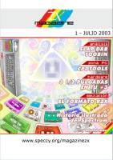

Esta página contiene enlaces a revistas sobre software libre y distribuciones GNU/Linux publicadas en 2003
Página web: Revista Edutec
Número 16 - 2003 abril
Descarga (PDF 0.9 MB, español)
Página web: Revista Magazine ZX

Número 1 - 2003 julio
Descarga (PDF 1.8 MB, español)
Número 2 - 2003 agosto
Descarga (PDF 2.3 MB, español)
Número 3 - 2003 septiembre
Descarga (PDF 1.3 MB, español)
Número 4 - 2003 noviembre